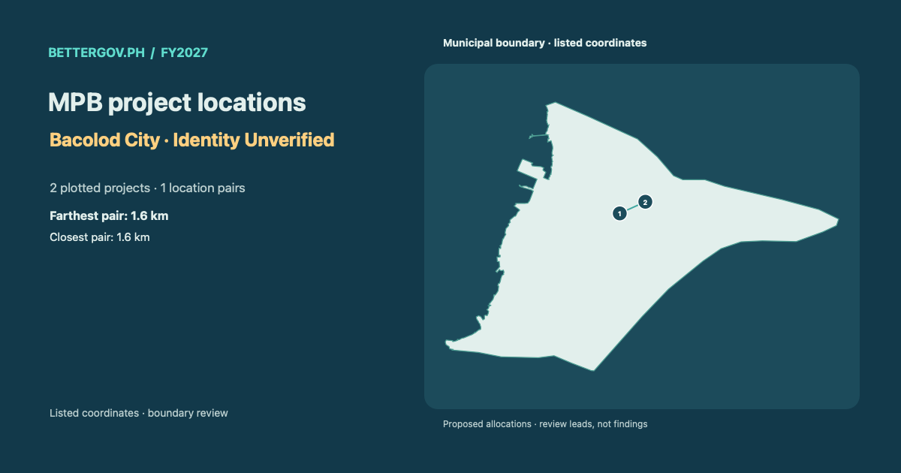

MPB project locations · Bacolod City · Identity Unverified

Open interactive map and project details ↗Proposed allocations. Location signals are review leads, not findings.

Open interactive map and project details ↗Proposed allocations. Location signals are review leads, not findings.